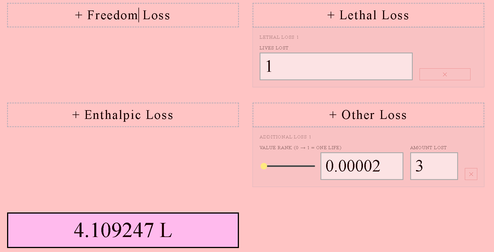

LITROUS Explanation
How Calculate the LITROCITY of any given event
What is Litrocity?
Litrocity is a concept I made up. Basically it's a quantifiable amount of human stupidity in the form of a liquid. It just so happens that the only things that I find stupid about humanity are things that cause either pain, loss, or the spread of the former and/or the latter. Therefore my idea of human stupidity kind of perfectly aligns with the idea of atrocities. Therefore I combined the two words "Litrous"+"Atrocity" to create "Litrocity".
If you just want to see my EPIC LITROCITY CALCULATOR. You can just click the button below. And if you are interested in me going through an example of how to use the calculator, then read further beyond the button. Have fun
How do I use the Litrocity calculator?
I will be demonstrating how to use my epic calculator by going through an example. We will be calculating the Litrocity of The killing of Renée Nicole Macklin Good.
So the first of all the things we gotta calculate is the pain. The Pain attribute of Litrocity accounts for not only the physical pain, but also the physical discomfort and quality of life aswell as the psychological pain. Pain is a more dramatic title, but something like a mere back discomfort can be accounted for in the litrocity calculator, even if it's negligible.
In this example, officer Johnathan Ross got hit by Ms Good's SUV while concurrently shooting at Ms Good. It was later reported that he had suffered from traumatic internal bleeding in the Torso where he was hit. I will now proceed to make what I can only allow myself to call a "UEG" (Unfathomably Educated Guess) regarding the pain felt by Ross.
So the term "internal bleeding" in medicine can technically refer to any time blood is somewhere where it shouldn't be, even like a bruise or so. However in practicality, Doctors would never call a bruise internal bleeding, they are more likely to call it more fancy words like a "hematoma" or such. So assuming that the anonymous sources weren't just trying to exagerate the extent to which Ross got hurt, I think it's fair to say that Ross suffered from a case of hemoperitoneum. Which is when blood leaks into the peritoneal cavity which is covered by the serous membrane called the peritoneum(I have to flex my Morphological Science knowledge im sorry) This can lead to a Class 1 Hemorrhagic Shock, however, given the fast release out of the hospital, this is severely unlikely. Truth is that there is no way this was anything like a major hemmorhage or such, it was more likely a mild/minor case of internal bleeding. Now obviously diagnosing someone from some videos is really hard, no matter how many angles you have, and it doesn't help that there is close to no knowledge about the extent of Ross' injuries apart from the words "internal bleeding". Therefore I will diagnose him with a case of mild hemoperitoneum since more serious cases wouldn't result on a same day release.
So I am going to imagine that after getting hit and settling everything, Johnathan Ross went to the hospital where he wanted to check if he had sustained any damage he should dedicate any amount of concern to. How much time passed??? Well assuming that he got something like a CT scan and an Ultrasound, and the hospital was like really busy, I imagine that it must have been something like 4-6 hours. Given that by the time of Kristi Noem's speach he had already been released, I would say that the entire process probably took about 6 hours. Meaning that he was 6 hours in pain without treatment.
So now we have to quantify the pain that this hemoperitoneum induced upon Mr Ross. This is from a scale of 0(nothing) to 1(Torture). Getting hit by cars, even slow-moving ones, can be quite painful. Mostly because of the car's MASS FACTOR which gives it a large amount of MOMENTUM and thus it can induce a lot of FORCE upon someone. However, people sometimes argue that Ross was still seen walking and giving instructions much after the incident, and there is also the fact that he got released out of the hospital insanely quickly, too quick for the internal bleeding to have been too severe. Therefore I would conclude that this must have been quite far from tortuous pain. How far tho? this is where the subjectivity comes into play, I got no idea :p But if I had to give a percentage, I would say that the pain that Ross has felt during his 6 hours before the doctor gave him some ibuprophen or something, must have been like around 5% of what CIA tortured captives have felt. Therefore the PAIN RANK is 0.05

And plugging it into the calculator gives us that this is equal to 62mL of Litrocity.
Next up is the Psycological pain. If you thought that the last one was subjective then this one is going to be a field day. Basically we just have one variable to deal with here. The phases are something that won't be playing much of a role here, the phases are somewhat of an equivalent to the hours in the physical pain. However the psychological pain dealt here was only in a moment, that being the moment of Good's death. Good reportedly had 2 sons, and a wife. I think that as far as Psyc-Pain goes, losing a loved one has gotta be up there. On a scale from 0(nothing) to 1(absolute torture) how much pain is it to lose a family member?? This is obviously ultra subjective, and I might have a little bit of a controversial take, but I don't think it's 100%. I think torture of any kind has more potential to inflict psycological damage on people. Having said that losing a loved one is still up there, I would say no less than 50%. Probably around 60%, and this percentage was inflicted in what I can only assume to be a minimum of 5 people, Renne's parents, her wife, and her children.

Phases in psychological damage refer to the extent to which the psycological damage meliorates or worstens over time. But I would only use this if the melioration/worstening of the event has anything to do with the parties involved. For example, in a hypothetical scenario where ICE decided to for no reason kidnap all 5 of Renne's family members and put them on a ICE detention center for like an year, that would look something like this.

As you can see the litrocity is increased because ICE worstened the conditions after a psycologically painfull event(Indicated by the increase in Litrocity). This is meant to reflect how a psycologically painful event can get worst over time. That's the logic behind this. If on the other hand ICE decided to provide therapeutic service and financial compensation in support of the family for about an year, then it might look something like this.

The astute among you may notice that it's easier for psyc-damage to get worst than it is to heal it. This is because it's much easier for trauma to get worst under hopeless/desperate conditions than it is to heal from them even under the best conditions. Still according to this data, the family still managed to heal most of the damage. In a way, this kinda represents what ICE could do to make up for the Litrocity they have caused upon the family members.
Next up is loss. What was lost during this event? Energy? Lives? Litmus Milk? Anything counts. Loss can be material, temporal, enthalpic, or spiritual I guess. One life lost is approximately 4.109 liters of Litrocity, that's the constant that all of these calculations are based upon. And thus it's the easiest calculation done.
Technically we could also count the material loss of Renne Good's SUV aswell as the two other cars it crashed into after Ross shot Good. And I will, but you will notice that I will put the material value of these cars very low. I will still put them just to use some other boxes. Also, one could argue that Ross was forced to check himself into the hospital in order to make sure that he didn't have any internal bleeding. So we can put that under "Freedom Loss", I'm not going to tho because I already took the screenshot, but you can use your imagination. You could argue that some energy was wasted since there were a lot of cars that were turned on but weren't moving and all, but i'm not doing those calculations :p so deal with it.

Next up is the spread. Basically, famous political figures might endorse or condemn the events that happened in this. And you must figure out the extent to which said situation is now more likely, or less likely to happen given the political landscape. It's safe to say that this is incredibly subjective, but regardless, I will try my best to justify everything as much as possible. Starting with the following
MINIMUM INITIAL REPEATANCE CHANCEThis means the initial chance of this event repeating itself, without any political intervention just yet. The minimum chance of this repeating can't be 0 because a very similar event to this happened with a man called Alex Pretti. So it can't be 0 unfortunately, it can be close to 0 tho. I would put the repeatance chance at about 1% given some other reported-yet-not-as-massively-recorded-shootings that have happened during Trump's ICE thing.
MAXIMUM INITIAL REPEATANCE CHANCEThe maximum initial chance I would say is something along the lines of 10%. This is because of the to the high amount of protests around ICE combined with ICE's unreasonable aggressiveness. It also accounts for the lack of Police training that ICE has been receiving because of their short staff.
MINIMUM REPEATANCE CHANCE CHANGESome would say that Trump's administration took an approach that wholy puts all of the blame on Renne Good and non of the blame on the ICE police. The strategy (from what I can surmise) is to instill fear upon the citzens and thus deterring them from interferring with further ICE operations. This is good thing since it is likely to prevent similar circumstances necesitated to create such a tragedy. However, I can NOT overlook the complete lack of any measurable amount of condemnation pertaining to the completely unnecesary use of lethal force that officer Ross utilized in this situation. Ross is still an ICE officer and I think that at the VERY least, he should have lost his ICE license. Thus I have to give a minimum repeatance chance change of -8% To an extent this could be interpreted as Trump's administration diminishing the chances of this event repeating itself by about 8%
MAXIMUM REPEATANCE CHANCE CHANGESome could say that Trump's Administration's decision to put the blame solely on Renne Good not only fails to condemn some terrible police training, it also somewhat endorses the repeatance of this event, even if not directly. The narrative of spread mostly by Kristi Noem and JD Vance of Renne being a "Domestic Terrorist" with "intent to kill or cause bodily harm" and Officer Ross using "Appropiate Self Defense" is very too far away from the truth to be ignored. Instead of instilling fear of protesting, some can argue that such massive lies will actually cause more protesting to happen, which might as a response cause more situations in which it might be more likely for ICE officers to act like Officer Ross in that specific situation. Therefore the max repeatance chance increase is calculated by me to be about 14%, not intentionaly increased by the trump administration, but increased nonetheless.
LITROCITY OF EVENT THAT MIGHT BE REPEATEDWe already calculated this, it was 7.868971 L
SPREADThe spread refers to how many times this event would be repeated if there was a 100% chance of this event repeated. Which is to say, how many people could possibly be caught in a circumstance similar to Renne Good's circumstance. Luckily, NO KING'S PROTEST recently happened, and we have the number of all the nationwide population of people that participated in it. This is much better than using the US population since protestors are much more likely to be subjected to the lethality of the police. There are some limitations to using this number such as the fact that Renne Good herself wasn't even an "activist" according to her wife, meaning that such things can still happen to non-activist people. But who knows how the hell i would even calculate that, so im going to use the no king's nationwide protest number because this is only an example after all. It's 8,000,000 people. SO WE PLUG ALL THIS IN AND GET!!!!!

So this is a big number, mostly because there are a lot of protestors in the US. But yeah, this is among one of the most litrocious events in my opinion. Not because of the unfortunate death, but because of the complete lack of any justice whatsoever. The only condemnation that Ross received for acting erroneously was... hate from the internet?? He got praised by Trump's administration on the other hand.